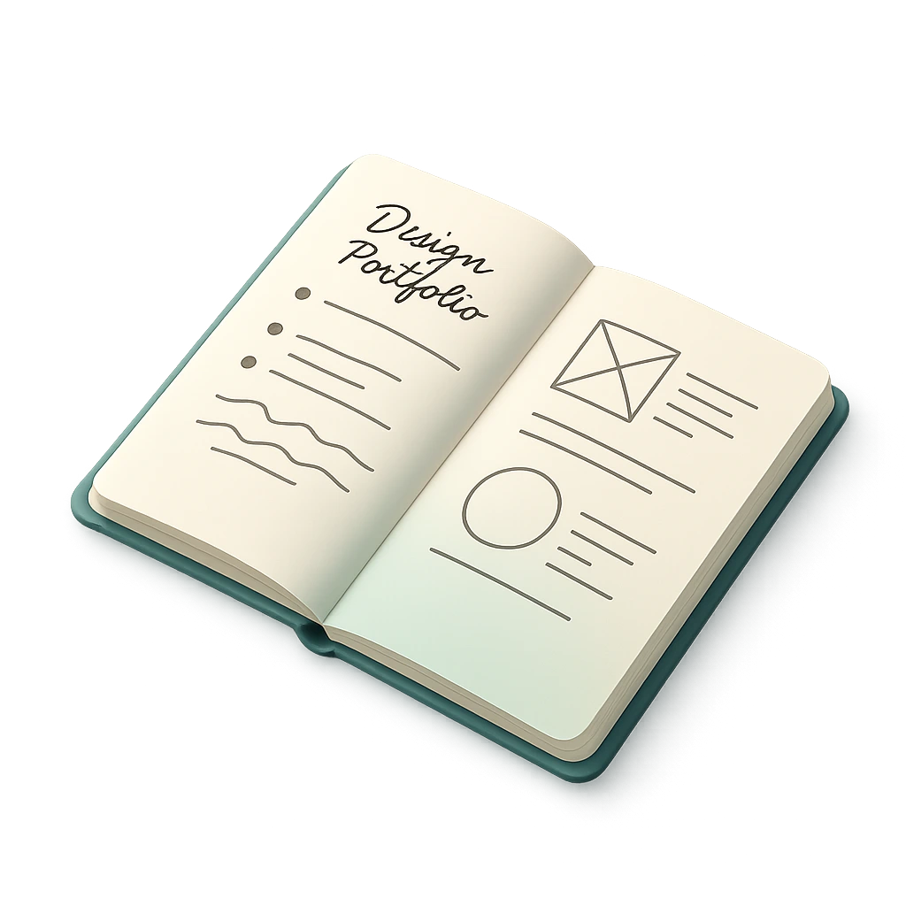
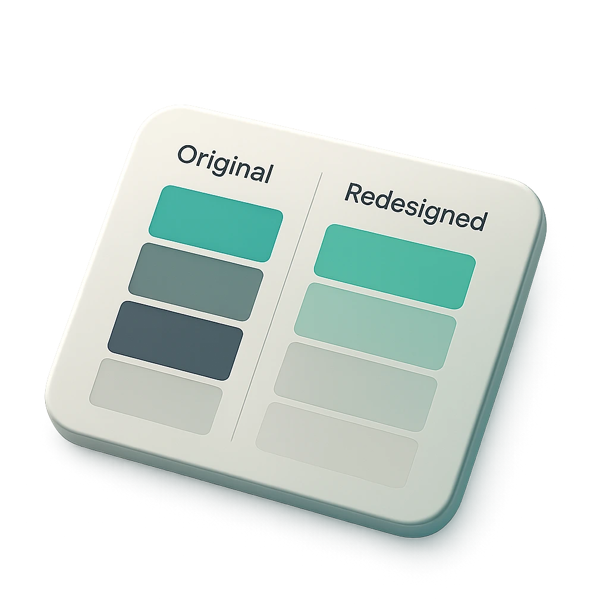

Over the course of my career, I've had the chance to work as a visual, UI, or UX designer on a wide range of projects across different industries:
digital marketing
e-commerce
foodies
insurance
fintech
startups
job markets
low-code platforms
information systems
development
I've worked with both well-established companies and fast-growing startups, in both async and sync setups. I was usually part of agile teams, responsible for the entire design process and later also for getting it into production.

I have solid experience across the whole design process – from early idea phases, through research, user studies, testing, and iterations, all the way to final prototypes and handoff materials for the dev team. That includes everything from precisely defined styles and components to detailed specs for features and behaviors of individual elements.
UX Research
UI Design
Prototyping
Design Systems
User Testing
Information Architecture
Interaction Design
Visual Design
Vibe Coding
AI generated design and assets
I've worked my way up to larger-scale projects, where monthly traffic reaches into the millions and annual turnover is in the billions. This journey gave me the most experience when it comes to scalability and sustainability of design, including a deeper understanding of design systems and how to implement them into products.

Funnily enough, I often ended up working on redesigns of products and brands.